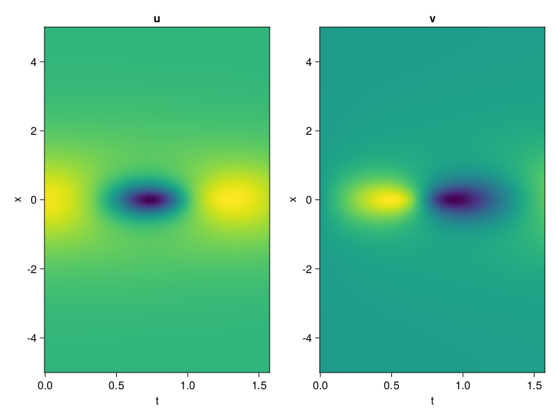
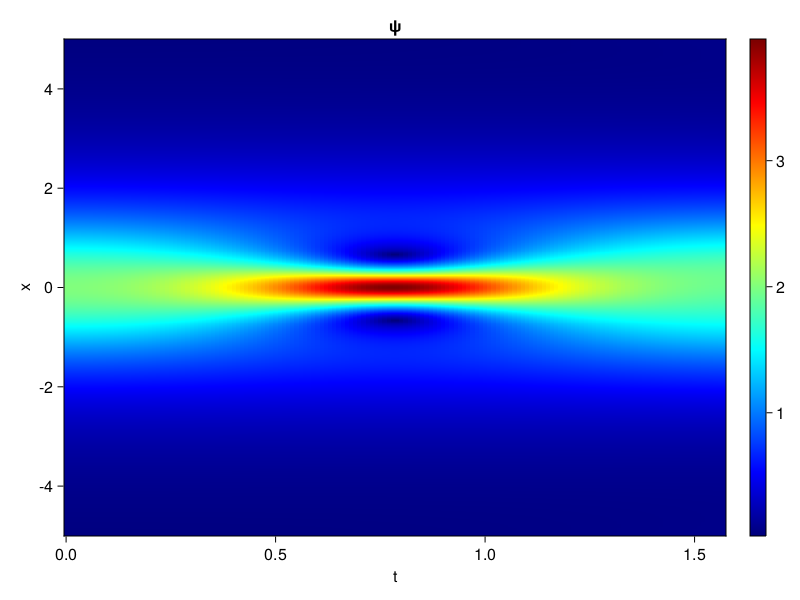
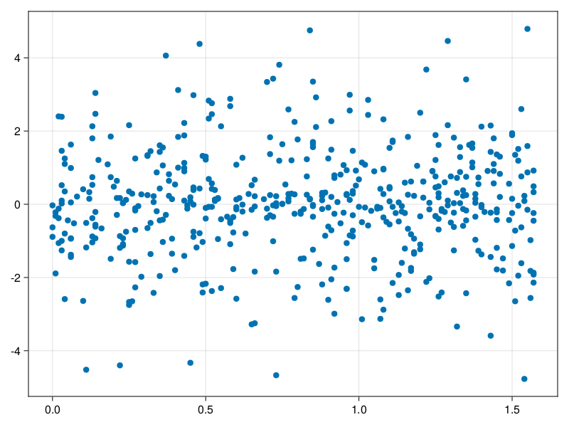

Schrödinger equation
The nonlinear Shrödinger equation is given by
\[\mathrm{i} \partial_t \psi=-\frac{1}{2} \sigma \partial_{x x} \psi-\beta|\psi|^2 \psi\]
Let $\sigma=\beta=1, \psi=u+v i$, the equation can be transformed into a system of partial differential equations
using ModelingToolkit, IntervalSets, Sophon, CairoMakie
using Optimization, OptimizationOptimJL
@parameters x,t
@variables u(..), v(..)
Dₜ = Differential(t)
Dₓ² = Differential(x)^2
eqs=[Dₜ(u(x,t)) ~ -Dₓ²(v(x,t))/2 - (abs2(v(x,t)) + abs2(u(x,t))) * v(x,t),
Dₜ(v(x,t)) ~ Dₓ²(u(x,t))/2 + (abs2(v(x,t)) + abs2(u(x,t))) * u(x,t)]
bcs = [u(x, 0.0) ~ 2sech(x),
v(x, 0.0) ~ 0.0,
u(-5.0, t) ~ u(5.0, t),
v(-5.0, t) ~ v(5.0, t)]
domains = [x ∈ Interval(-5.0, 5.0),
t ∈ Interval(0.0, π/2)]
@named pde_system = PDESystem(eqs, bcs, domains, [x,t], [u(x,t),v(x,t)])\[ \begin{align} \frac{\mathrm{d}}{\mathrm{d}t} u\left( x, t \right) =& - \frac{1}{2} \frac{\mathrm{d}}{\mathrm{d}x} \frac{\mathrm{d}}{\mathrm{d}x} v\left( x, t \right) - \left( \left|u\left( x, t \right)\right|^{2} + \left|v\left( x, t \right)\right|^{2} \right) v\left( x, t \right) \\ \frac{\mathrm{d}}{\mathrm{d}t} v\left( x, t \right) =& \frac{1}{2} \frac{\mathrm{d}}{\mathrm{d}x} \frac{\mathrm{d}}{\mathrm{d}x} u\left( x, t \right) + \left( \left|u\left( x, t \right)\right|^{2} + \left|v\left( x, t \right)\right|^{2} \right) u\left( x, t \right) \end{align} \]
pinn = PINN(u = Siren(2,1; hidden_dims=16,num_layers=4, omega = 1.0),
v = Siren(2,1; hidden_dims=16,num_layers=4, omega = 1.0))
sampler = QuasiRandomSampler(500, (200,200,20,20))
strategy = NonAdaptiveTraining(1,(10,10,1,1))
prob = Sophon.discretize(pde_system, pinn, sampler, strategy)OptimizationProblem. In-place: true
u0: ComponentVector{Float64}(u = (layer_1 = (weight = [-0.011629223823547363 0.30369895696640015; -0.09507513046264648 -0.3546760082244873; … ; -0.09617352485656738 0.007050216197967529; -0.44714832305908203 0.25454646348953247], bias = [0.0; 0.0; … ; 0.0; 0.0;;]), layer_2 = (weight = [0.23590023815631866 -0.3799547255039215 … -0.3759639263153076 0.04630836471915245; -0.535747766494751 -0.2176995426416397 … 0.37342599034309387 -0.28042513132095337; … ; 0.2933988571166992 -0.4304382801055908 … 0.12793749570846558 -0.019153647124767303; -0.20866894721984863 -0.408407598733902 … -0.28395238518714905 0.24199877679347992], bias = [0.0; 0.0; … ; 0.0; 0.0;;]), layer_3 = (weight = [-0.46615535020828247 0.26920372247695923 … 0.048799652606248856 0.35131603479385376; 0.12264751642942429 0.018658775836229324 … -0.3340452313423157 0.24897660315036774; … ; 0.21224085986614227 0.12353987991809845 … 0.14191943407058716 0.081128790974617; 0.1516089290380478 -0.6022673845291138 … -0.16941681504249573 -0.2842637300491333], bias = [0.0; 0.0; … ; 0.0; 0.0;;]), layer_4 = (weight = [0.1895163208246231 -0.035257771611213684 … -0.35857638716697693 -0.33798089623451233; -0.4957839250564575 0.02240968681871891 … 0.28317132592201233 -0.38267529010772705; … ; 0.2612341046333313 0.5149616003036499 … 0.3203742802143097 -0.4522295594215393; -0.4909827411174774 -0.4165082573890686 … 0.2003381997346878 -0.42139723896980286], bias = [0.0; 0.0; … ; 0.0; 0.0;;]), layer_5 = (weight = [-0.11036248505115509 -0.2167307585477829 … -0.07807613164186478 -0.5314086079597473], bias = [0.0;;])), v = (layer_1 = (weight = [-0.4153751730918884 -0.25185447931289673; 0.2922179698944092 -0.006653904914855957; … ; 0.11110901832580566 0.27911263704299927; 0.1535114049911499 0.3294450640678406], bias = [0.0; 0.0; … ; 0.0; 0.0;;]), layer_2 = (weight = [0.42898643016815186 -0.5091413259506226 … 0.5299177765846252 -0.047008730471134186; -0.032071299850940704 0.43269670009613037 … 0.4481411874294281 -0.07588611543178558; … ; 0.23569875955581665 -0.33492693305015564 … -0.2468806803226471 -0.11119075119495392; -0.4417782425880432 0.18005932867527008 … -0.009464876726269722 0.3222394287586212], bias = [0.0; 0.0; … ; 0.0; 0.0;;]), layer_3 = (weight = [-0.5456450581550598 0.30286532640457153 … 0.3476405441761017 0.39612191915512085; 0.025723835453391075 -0.2922033965587616 … -0.1609169989824295 0.4974570870399475; … ; 0.16356618702411652 -0.47865164279937744 … 0.5603955984115601 -0.4655870497226715; 0.46759477257728577 -0.45906001329421997 … 0.10136444866657257 -0.03692568466067314], bias = [0.0; 0.0; … ; 0.0; 0.0;;]), layer_4 = (weight = [0.4756568968296051 -0.1419243961572647 … -0.5718872547149658 0.5074084997177124; -0.5316761136054993 -0.20904213190078735 … -0.439693421125412 0.23873558640480042; … ; 0.363416463136673 -0.3028622567653656 … -0.35162314772605896 -0.13775533437728882; -0.16429086029529572 0.3897932171821594 … -0.2744930386543274 -0.3077165186405182], bias = [0.0; 0.0; … ; 0.0; 0.0;;]), layer_5 = (weight = [-0.1684069186449051 -0.0011896888026967645 … -0.012674489058554173 -0.46064820885658264], bias = [0.0;;])))Now we train the neural nets and resample data while training.
function train(pde_system, prob, sampler, strategy, resample_period = 500, n=10)
bfgs = BFGS()
res = Optimization.solve(prob, bfgs; maxiters=2000)
for i in 1:n
data = Sophon.sample(pde_system, sampler)
prob = remake(prob; u0=res.u, p=data)
res = Optimization.solve(prob, bfgs; maxiters=resample_period)
end
return res
end
res = train(pde_system, prob, sampler, strategy)u: ComponentVector{Float64}(u = (layer_1 = (weight = [0.17771926042960826 0.023026132787830368; -0.26192921862986884 -0.9180677718751947; … ; -0.6109126325667125 -0.01926768664098101; -0.28564444067580713 -0.04587666831614362], bias = [0.027015477223053336; -0.18902600860301297; … ; 0.1969706380996317; -0.12056581841653233;;]), layer_2 = (weight = [0.339961387079528 -0.6314830440041679 … -0.44617007362572864 -0.09347140469177898; -0.3912414021322248 -0.43919059303348135 … 0.27921630340331227 -0.3498688674632532; … ; 0.26636127094011874 -0.12883712852464715 … -0.14377955175887658 -0.07043896595389805; -0.20741821486074566 -0.17578820138347878 … -0.3339833290740102 0.3910428725446049], bias = [0.15128692371944644; 0.086918123695283; … ; -0.33267115931294655; 0.20246575632855626;;]), layer_3 = (weight = [-0.49779387514442597 0.7423017219531167 … 0.3866982593811168 -0.07934882323113533; 0.02229529940670956 -0.21341151702496974 … -0.44697275089567756 0.024150352117802257; … ; 0.08850741737850522 0.237762389653561 … 0.12296345941119712 -0.06335005063318956; -0.17320423425196071 -0.42469897547678864 … -0.1277433080949863 -0.01123037095097742], bias = [0.22597813526881394; -0.05797874222647389; … ; 0.07729642343837906; 0.025488450347421532;;]), layer_4 = (weight = [0.2972051674000892 0.1348599256321304 … -0.6342101876501491 -0.2297462244071786; -0.2853884701643742 0.1405037486001121 … 0.34249354216716604 -0.2973947462207053; … ; 0.36167605134138847 0.49680654267782587 … 0.31307862906830003 -0.3782281299950195; -0.4616773672106601 -0.18857816996334706 … 0.01770593363788018 -0.43362289868046483], bias = [-0.23409170052957465; -0.10149023419058611; … ; 0.11678384843530486; 0.12069278366105635;;]), layer_5 = (weight = [-0.40757859329742646 0.21944907015818088 … 0.32790143302319685 -0.8796285702262157], bias = [0.1194024498808075;;])), v = (layer_1 = (weight = [-0.24879409376537873 -0.29124458650452884; 0.706532228701792 -0.49710133613237306; … ; 0.17857444439891465 0.1442528401385604; 0.106527015081517 0.12463040353117903], bias = [0.48154829638615304; 0.02083053363535532; … ; -0.10647433086434308; 0.2256883749085979;;]), layer_2 = (weight = [0.30669095416659514 -0.34030067913426104 … 0.5097489650658152 0.07680396237014335; -0.10150212928471454 0.6015948178843175 … 0.4105534008546108 -0.15557979116675352; … ; 0.5403048233373224 -0.6563545599169851 … -0.3462389531145612 -0.16220182461120475; -0.548321616761793 0.09023999757525786 … 0.13691489850660077 0.6135194469243649], bias = [0.151443313268091; -0.22315668949994547; … ; -0.10298462596228915; -0.3825064285895138;;]), layer_3 = (weight = [-0.6362248812690423 0.3309170954264118 … 0.17747344987293293 0.3442552230124; 0.20330645907810643 -0.49085876704666764 … 0.009501916467269379 0.3225646329906538; … ; 0.6355204510552916 -0.8130841392325552 … 0.28416527839267547 -0.3235641093238111; 0.6381919120256255 -0.20732166286910142 … 0.2405959517310184 0.1245370945183563], bias = [-0.26496269304399017; 0.3097990592830449; … ; 0.11819851543846753; 0.11671562247122634;;]), layer_4 = (weight = [0.43828933009073173 -0.11564205410925137 … -0.3524746439567017 0.4860967208799014; -0.43836890262200184 -0.33735498934301206 … -0.11527684576799349 0.3909812939477282; … ; 0.28818718008009764 -0.2585726452159323 … -0.32719142709746696 -0.14500841741209994; -0.25419016307042974 0.3953715299502886 … -0.1453568869707949 0.07856706573071433], bias = [-0.030599852556101412; -0.2282990209172498; … ; 0.10408158808826037; 0.13272756139441924;;]), layer_5 = (weight = [-0.4356399898492889 -0.11759595722468065 … -0.029276633680730968 -0.5272981622747694], bias = [0.11776179453885446;;])))phi = pinn.phi
ps = res.u
xs, ts= [infimum(d.domain):0.01:supremum(d.domain) for d in pde_system.domain]
u = [sum(phi.u(([x,t]), ps.u)) for x in xs, t in ts]
v = [sum(phi.v(([x,t]), ps.v)) for x in xs, t in ts]
ψ = @. sqrt(u^2+ v^2)
axis = (xlabel="t", ylabel="x", title="u")
fig, ax1, hm1 = heatmap(ts, xs, u', axis=axis)
ax2, hm2= heatmap(fig[1, end+1], ts, xs, v', axis= merge(axis, (; title="v")))
display(fig)
axis = (xlabel="t", ylabel="x", title="ψ")
fig, ax1, hm1 = heatmap(ts, xs, ψ', axis=axis, colormap=:jet)
Colorbar(fig[:, end+1], hm1)
display(fig)
Customize Sampling
Bascially any sampling method is supportted. For example we can sample data according to the predicted solution.
using StatsBase
data = vec([[x, t] for x in xs, t in ts])
wv = vec(ψ)
new_data = wsample(data, wv, 500)
new_data = reduce(hcat, new_data)
fig, ax = scatter(new_data[2,:], new_data[1,:])
prob.p[1] = new_data
prob.p[2] = new_data
prob = remake(prob; u0 = res.u)
# res = Optimization.solve(prob, bfgs; maxiters=1000)OptimizationProblem. In-place: true
u0: ComponentVector{Float64}(u = (layer_1 = (weight = [0.17771926042960826 0.023026132787830368; -0.26192921862986884 -0.9180677718751947; … ; -0.6109126325667125 -0.01926768664098101; -0.28564444067580713 -0.04587666831614362], bias = [0.027015477223053336; -0.18902600860301297; … ; 0.1969706380996317; -0.12056581841653233;;]), layer_2 = (weight = [0.339961387079528 -0.6314830440041679 … -0.44617007362572864 -0.09347140469177898; -0.3912414021322248 -0.43919059303348135 … 0.27921630340331227 -0.3498688674632532; … ; 0.26636127094011874 -0.12883712852464715 … -0.14377955175887658 -0.07043896595389805; -0.20741821486074566 -0.17578820138347878 … -0.3339833290740102 0.3910428725446049], bias = [0.15128692371944644; 0.086918123695283; … ; -0.33267115931294655; 0.20246575632855626;;]), layer_3 = (weight = [-0.49779387514442597 0.7423017219531167 … 0.3866982593811168 -0.07934882323113533; 0.02229529940670956 -0.21341151702496974 … -0.44697275089567756 0.024150352117802257; … ; 0.08850741737850522 0.237762389653561 … 0.12296345941119712 -0.06335005063318956; -0.17320423425196071 -0.42469897547678864 … -0.1277433080949863 -0.01123037095097742], bias = [0.22597813526881394; -0.05797874222647389; … ; 0.07729642343837906; 0.025488450347421532;;]), layer_4 = (weight = [0.2972051674000892 0.1348599256321304 … -0.6342101876501491 -0.2297462244071786; -0.2853884701643742 0.1405037486001121 … 0.34249354216716604 -0.2973947462207053; … ; 0.36167605134138847 0.49680654267782587 … 0.31307862906830003 -0.3782281299950195; -0.4616773672106601 -0.18857816996334706 … 0.01770593363788018 -0.43362289868046483], bias = [-0.23409170052957465; -0.10149023419058611; … ; 0.11678384843530486; 0.12069278366105635;;]), layer_5 = (weight = [-0.40757859329742646 0.21944907015818088 … 0.32790143302319685 -0.8796285702262157], bias = [0.1194024498808075;;])), v = (layer_1 = (weight = [-0.24879409376537873 -0.29124458650452884; 0.706532228701792 -0.49710133613237306; … ; 0.17857444439891465 0.1442528401385604; 0.106527015081517 0.12463040353117903], bias = [0.48154829638615304; 0.02083053363535532; … ; -0.10647433086434308; 0.2256883749085979;;]), layer_2 = (weight = [0.30669095416659514 -0.34030067913426104 … 0.5097489650658152 0.07680396237014335; -0.10150212928471454 0.6015948178843175 … 0.4105534008546108 -0.15557979116675352; … ; 0.5403048233373224 -0.6563545599169851 … -0.3462389531145612 -0.16220182461120475; -0.548321616761793 0.09023999757525786 … 0.13691489850660077 0.6135194469243649], bias = [0.151443313268091; -0.22315668949994547; … ; -0.10298462596228915; -0.3825064285895138;;]), layer_3 = (weight = [-0.6362248812690423 0.3309170954264118 … 0.17747344987293293 0.3442552230124; 0.20330645907810643 -0.49085876704666764 … 0.009501916467269379 0.3225646329906538; … ; 0.6355204510552916 -0.8130841392325552 … 0.28416527839267547 -0.3235641093238111; 0.6381919120256255 -0.20732166286910142 … 0.2405959517310184 0.1245370945183563], bias = [-0.26496269304399017; 0.3097990592830449; … ; 0.11819851543846753; 0.11671562247122634;;]), layer_4 = (weight = [0.43828933009073173 -0.11564205410925137 … -0.3524746439567017 0.4860967208799014; -0.43836890262200184 -0.33735498934301206 … -0.11527684576799349 0.3909812939477282; … ; 0.28818718008009764 -0.2585726452159323 … -0.32719142709746696 -0.14500841741209994; -0.25419016307042974 0.3953715299502886 … -0.1453568869707949 0.07856706573071433], bias = [-0.030599852556101412; -0.2282990209172498; … ; 0.10408158808826037; 0.13272756139441924;;]), layer_5 = (weight = [-0.4356399898492889 -0.11759595722468065 … -0.029276633680730968 -0.5272981622747694], bias = [0.11776179453885446;;])))